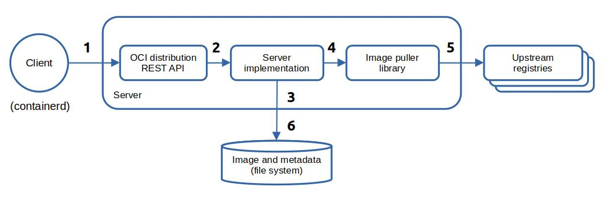

Design¶
This is the design of the Ociregistry server:

Narrative:
- A client (in this case -
containerd) initiates an image pull. The image pull consists of a series of REST API calls. The API calls are handled by the server's implementation of a subset of the OCI Distribution Spec. - The API is just a veneer that delegates to the server implementation.
- The server checks the local cache and if the image is in cache it is immediately returned from cache.
- If the image is not in cache, the server calls the embedded ImgPull library to pull the image from the upstream registry. The server knows which upstream to pull from because
containerdappends a query parameter (e.g.?ns=registry.k8s.io) to each API call.The server also supports in-path upstreams, e.g.:
docker pull ociregistry.host/registry.k8s.io/pause:3.8 - The embedded image puller library pulls the image from the upstream registry and returns it to the server.
- The server adds the image to cache and returns the image to the caller from the newly updated cache.
Image Pull Sequence Diagram¶
By way of background, a typical image pull sequence is as follows. If you tail the logs of the Ociregistry server, this is what you'll see:
sequenceDiagram
Client->>Server: HEAD the manifest list by tag, e.g. "registry.k8s.io/pause:3.8"
Server-->>Client: Digest of the manifest list in a response header (or 404 Not Found)
Client->>Server: GET the manifest list by digest
Server-->>Client: Send a manifest list listing all available manifests
Client->>Client: Pick an image manifest digest from the manifest list matching the desired OS and architecture
Client->>Server: GET the image manifest by digest
Server-->>Client: Send the image manifest
Client->>Server: GET the blobs for the image
Server-->>Client: Send the blobsTo support this, the server caches both the image list manifest and the image manifest.
Code Structure¶
The source code is organized as shown:
project root
├── api
├── bin
├── charts
├── cmd
├── docs
├── impl
│ ├── auth
│ ├── cache
│ ├── cmdline
│ ├── config
│ ├── globals
│ ├── helpers
│ ├── metrics
│ ├── preload
│ ├── pullrequest
│ ├── serialize
│ ├── handlers.go
│ └── ociregistry.go
└── mock
| Package | Description |
|---|---|
api |
Mostly generated by oapi-codegen using the OAPI Spec ociregistry.yaml in that directory. |
bin |
Has the compiled server after make server. |
charts |
The Helm chart. |
cmd |
Entry point (ociregistry.go) and sub-commands. |
docs |
MKDocs documentation (Material theme.) |
impl |
Has the implementation of the server. |
impl/auth |
Implements external authentication (i.e. Amazon ECR.) |
impl/cache |
Implements the in-memory cache. |
impl/cmdline |
Parses the command line. |
impl/config |
Has system configuration. |
impl/globals |
Globals. |
impl/helpers |
Helpers. |
impl/metrics |
The Observability implementation. |
impl/preload |
Implements the load and pre-load from an image list file. |
impl/pullrequest |
Abstracts the URL parts of an image pull. |
impl/serialize |
Reads/writes from/to the file system. |
impl/handlers.go |
Has the code for the subset of the OCI Distribution Server API spec that the server implements. |
impl/ociregistry.go |
A veneer that the embedded Echo server calls that simply delegates to impl/handlers.go. See the next section - REST API Implementation for some details on the REST API. |
mock |
Runs a mock upstream OCI Distribution server used by the unit tests. |
REST API Implementation¶
As stated above, the Ociregistry server implements a portion of the OCI Distribution Spec consisting of only the endpoints in the spec needed to meet its goal of being a pull-only OCI Distribution Server. It does this by running an http server that handles REST endpoints defined in the spec.
The Ociregistry server REST API is built by first creating an Open API spec: see ociregistry.yaml in the api directory of the project. Then the oapi-codegen tool is used to generate the API code and the Model code using configuration in the api directory of the project. This approach was modeled after the OAPI-Codegen Petstore example.
Oapi-codegen is installed by the following command:
go install github.com/oapi-codegen/oapi-codegen/v2/cmd/oapi-codegen@latest
The key components of the API scaffolding supported by OAPI-Codegen are shown below:
├── api
│ ├── models
│ │ └──models.gen.go (generated)
│ ├── models.cfg.yaml (modeled from pet store)
│ ├── ociregistry.gen.go (generated)
│ └── server.cfg.yaml (modeled from pet store)
├── cmd
│ └── ociregistry.go (this is the server - which embeds the Echo server)
└── ociregistry.yaml (the openapi spec built with swagger)
I elected to use the Echo option to run the API. The Echo server is started by the serve sub-command of the Ociregistry server.